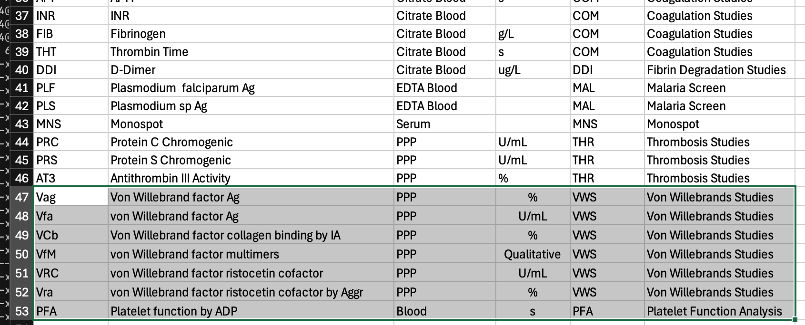
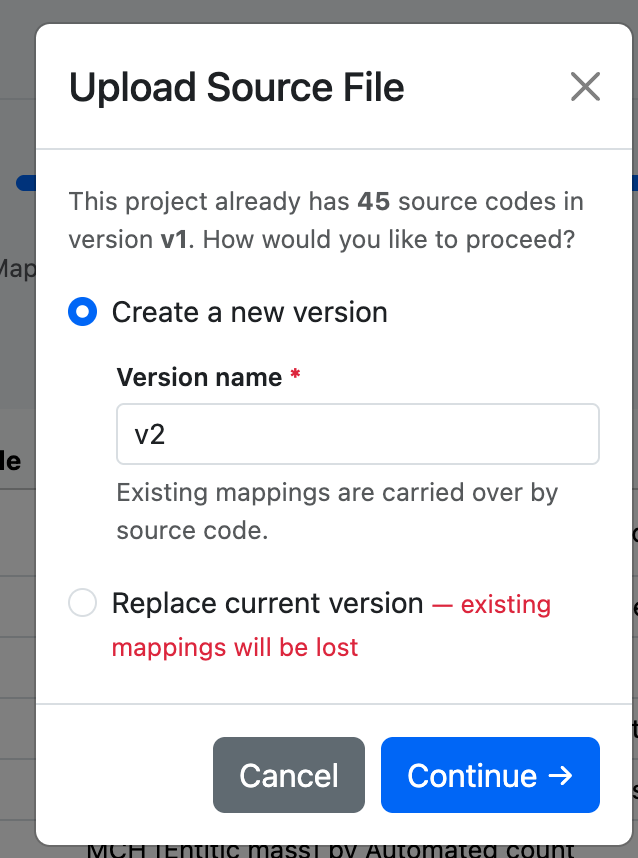
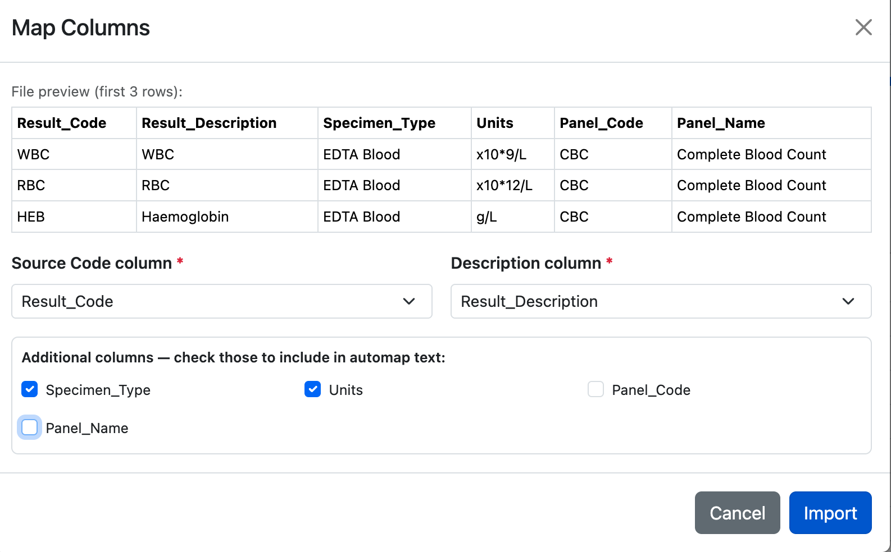
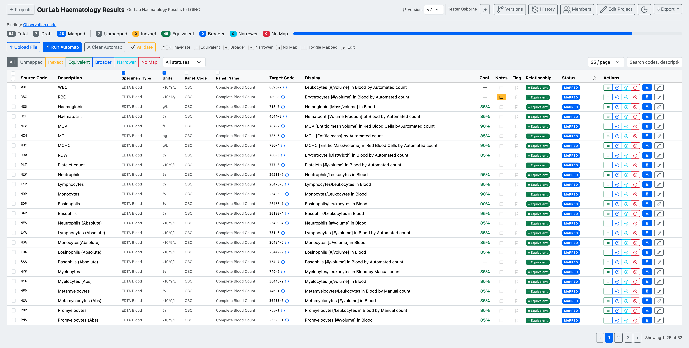
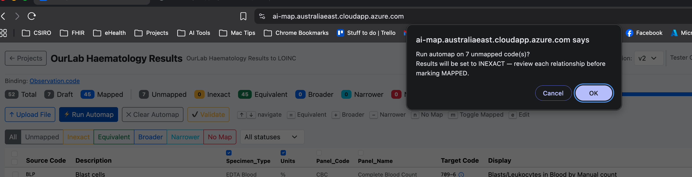
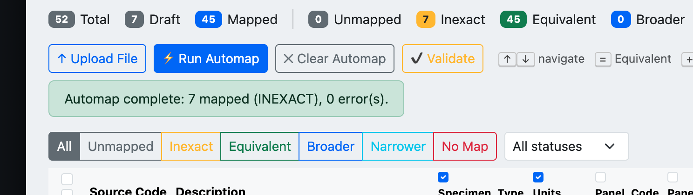
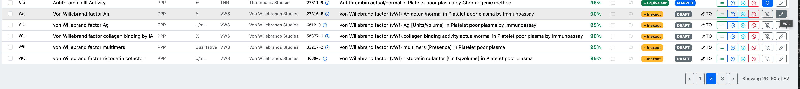
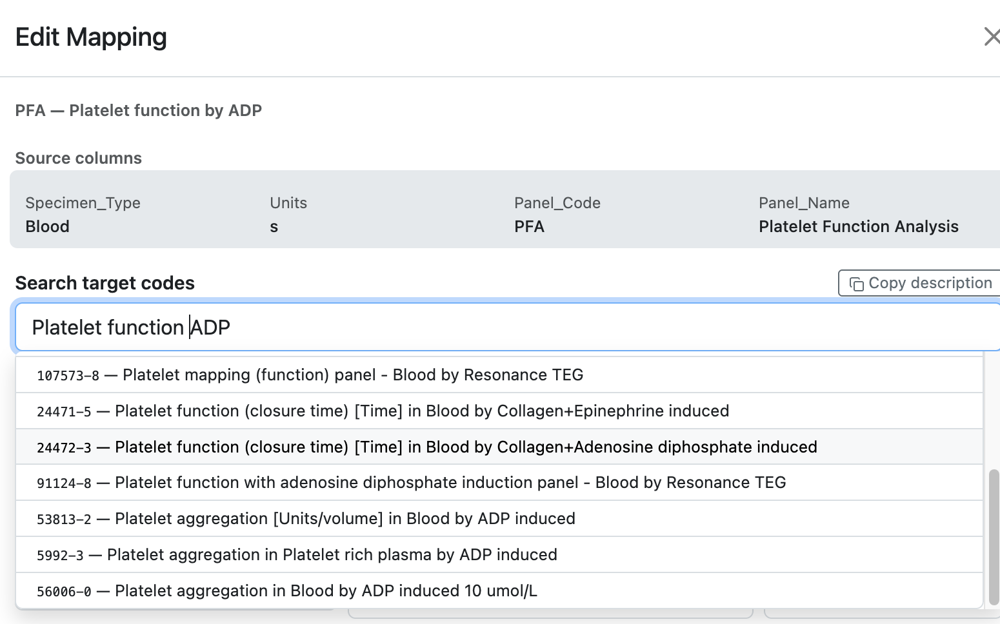

Updating Source Data
When the source code list changes — new tests added, codes retired — upload a new source file to create a new version. Existing mappings are carried over automatically by source code, so only new or changed codes need to be reviewed.
Prepare the updated source file
The new file should use the same column structure as the original. Any new rows will be added as unmapped; rows matching an existing source code will inherit the previous mapping.

The v2 source file includes additional analytes (Von Willebrand factors, Platelet Function Analysis) not present in v1.
Upload as a new version
Click Upload File in the project toolbar. Because the project already has a finalised version, AI-Map asks how to proceed.

Choose Create a new version and enter a version name (e.g. v2). Existing mappings are carried over by source code. Replace current version discards all existing mappings — use with caution.
Click Continue →.
Map columns
The Map Columns dialog appears again for the new file. Confirm the source code and description columns, and check the same additional columns as before.

Confirm column selections are consistent with v1 to ensure carried-over mappings remain aligned.
Click Import.
Review and automap new codes
The mapping table now shows all codes from v2. Previously mapped codes retain their status; new codes appear as Unmapped.

The v2 table shows 52 total codes: 45 carried over as Mapped from v1, 7 new codes to be mapped.
Run automap to propose targets for the new codes. The confirmation dialog shows only the unmapped count.

Only the 7 new unmapped codes are sent for automap — carried-over mappings are not affected.
When complete, review the new suggestions.

Automap complete: 7 new codes matched (set to Inexact for review), 0 errors. The 45 carried-over mappings remain at their previous status.
The new codes appear at the end of the table, ready for review.

The new Von Willebrand and Platelet Function codes (rows 26–52) are shown with their automap suggestions.
Edit any mappings that need adjustment. For codes with multiple plausible candidates, the search results help distinguish between methods and specimen types.

Searching for "Platelet function|ADP" returns multiple LOINC candidates differentiated by method — select the one that matches your instrument and specimen.
Once all codes are mapped and validated, follow the version management workflow to submit v2 for review and finalise it.